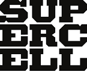

supercell
Supercell is a Finnish mobile game development company based in Helsinki, Finland. Founded in May 2010,
the company's debut game was the browser game Gunshine.net, and after its release in 2011,
Supercell started developing games for mobile devices. Since then,
the company has fully released five mobile games: Hay Day, Clash of Clans, Boom Beach, Clash Royale, and Brawl Stars
, which are freemium fast-paced games and have been very successful for the company,
the first two generating revenue of $2.4 million a day in 2013.
ideology
Supercell focuses on the development of free-to-play games that yield profits through the in-game micropayments. The company's objec
tive is to focus on the successful games that stay popular for years. The focus has not been on revenue,
but on the principle "just design something great, something that users love.
"[4] Game development focuses around "cells"of five to seven people which start with idea generation and an initial review by CEO Paananen.[
4]
The team subsequently develops the idea into a game,
which the rest of the company's employees get to play-test, followed by play-testing in Canada's iTunes App store;
if the Canada reception is good, the next step is global rollout (via iTunes).
[4] Supercell has discontinued a total of 14 game projects it did not deem promising enough,
[citation needed] successful failures which are celebrated by employees.
[4] One of the games that was cancelled well into development was Battle Buddies,
which had also been rated well in the test market, but the number of players was still too small.
The final decision for cancelling a pr is done by the development team themselves.
i m in class p1
and what about u;
i m in class p2
and what about u;
i m in class p3
and what about u;
In summer 2013, Supercell started marketing collaboration with the Japanese GungHo: the companies cross-marketed each other's games in their own games in their own markets. As a result, Clash of Clans became one of the most downloaded apps in Japan. GungHo's chairman of the board Taizo Son flew to Finland to thank Paananen and later introduced him to his brother Masayoshi Son, the CEO of the SoftBank Corporation. Soon, they proposed a corporate acquisition which indeed happened on October 7, 2013. SoftBank and GungHo bought 51% of Supercell's shares for 1.1 billion euros which is the largest price for a Finnish private company in history. In six months,
Supercell's value had tripled, since in spring 2013 the company had sold 16.7% of its shares for 100 million euros.